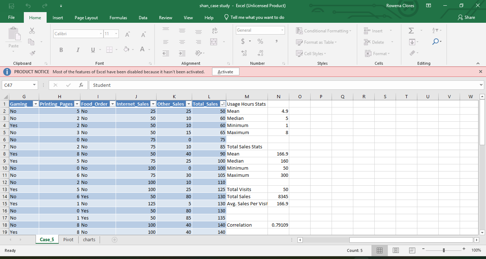

Poultry Feed Stock Tracking with POS Application
Automates inventory management and sales transactions, and improves the accuracy of stock records in poultry feed businesses.
View details
BSIT student and future Network Administrator and IT Consultant, with a strong interest in network management, troubleshooting, and technology solutions. Committed to enhancing technical competencies and gaining practical experience in the information technology field.
Connect
Discover
I am a fourth-year BSIT student specializing in Web Development and Data Analysis. My academic journey has given me a solid foundation in programming, databases, and systems thinking, and I enjoy turning that knowledge into working solutions. I have built projects ranging from a poultry feed POS system to an Android expense tracker, and each one taught me how much careful planning and testing matter.
My technical strengths include HTML, CSS, JavaScript, Python, and SQL, along with version control using Git and GitHub. I also have a growing interest in networking and troubleshooting, which sharpens my ability to find and fix problems quickly.
What motivates me most is applying technology to real-world problems that make processes more efficient. I am drawn to IT work that combines technical skill with coordination, so I am working toward becoming an IT Project Manager who can plan schedules, guide teams, and manage budgets. Along the way, I hope to grow into a Network Administrator or IT Consultant.
I value continuous learning, honesty in my work, and collaboration. I believe good IT solutions are built with the people who will use them in mind, and I want to keep improving both my code and my communication. I am ready to take on new challenges, learn from every project, and contribute to a team that values quality and growth.
Hi! I'm Shan Benedict Rodriguez, a I am a fourth-year BSIT student specializing in Web Development and Data Analysis.
I am motivated to work in the IT field because I want to apply my technical skills to real-world problems, continue learning new technologies, and develop solutions that can make processes more efficient.
The goal is to become a proficient IT Project Manager that plans and manages IT projects, teams, schedules, and budgets.
Expertise
The languages I use to build websites and applications.
The tools that help me work faster and stay organized.
Support skills that round out my IT knowledge.
Portfolio
Automates inventory management and sales transactions, and improves the accuracy of stock records in poultry feed businesses.
View details
Analyses IT help desk tickets to identify common issues, trends, and areas for improvement in the support process.
View detailsAn Android app that helps students and employees record daily spending, get AI-assisted insights, and manage their budgets.
View detailsMy process
A laptop showed no Wi-Fi networks while other devices in the same room connected normally. I checked that Wi-Fi was switched on, restarted the laptop and router, and confirmed other devices could join the network. The cause was airplane mode, which had been turned on by accident. Turning it off restored the connection.
Lesson: Check the simplest settings first before looking into hardware or network problems.
The office printer fed paper and ran normally, but every page came out blank. I checked the ink or toner levels, printed a test page from the printer settings, and confirmed the correct printer was selected on the computer. The toner cartridge was nearly empty, and replacing it fixed the problem.
Lesson: Check consumable levels before running deeper diagnostics.
A desktop took several minutes to start up and responded slowly to clicks. I reviewed Task Manager for high CPU and memory use, checked free space on the system drive, and reviewed the startup list. Several unneeded programs were set to launch at startup. Disabling them significantly reduced startup time.
Lesson: Startup programs are a common and easily fixed cause of slow performance.
An employee's card opened the main door but not the storage room door. I checked the employee's access permissions, tested another card on the storage room reader, and looked for a status light or error on the reader. The employee's access group had not been updated after a role change. Adding the storage room to the group fixed the issue.
Lesson: Access problems are often a permissions issue rather than a hardware fault.
An employee could receive emails but could not send them, and messages stayed in the Outbox. I confirmed the internet connection by opening a web page, checked the outgoing mail server settings, and re-entered the account password. The password had expired. Updating it allowed emails to send normally.
Lesson: When email can receive but not send, check account credentials and outgoing server settings first.
1. Vulnerability: The login form builds its database query by inserting user input directly into the SQL statement, without checking or separating it from the query.
2. How it happens: An attacker types a crafted value such as ' OR '1'='1 into the username field. The database reads the input as part of the query logic, so the check can be bypassed and the attacker gets in without a valid password.
3. Risks: Unauthorized account access, theft or change of customer and staff data, and possible loss of the entire database.
4. Prevention by developers: Use parameterized queries or prepared statements so user input is always treated as data, never as SQL. Validate input on the server side and avoid building queries with string concatenation.
5. Security practices: Give the application's database account only the permissions it needs, hash passwords with a strong algorithm, show generic error messages instead of raw database errors, review code with security checks, and test forms with tools such as OWASP ZAP before release.
Lesson: Never trust user input. Separate data from commands and the most common injection attacks can be prevented.
Ready for work
Background
Bachelor of Science in Information Technology
Datamex College of Saint Adeline, 2026 – Present
Add two or three key skills or achievements.
Download resumeRecognition
Responsible AI use
Get in touch
Looking back
As an Information Technology (IT) student, getting involved in the creation of my portfolio turned out to be a great experience. This assignment allowed me to demonstrate my skills and knowledge of the programming languages and web development that I learned and accumulated throughout my college education. During this period, I discovered that the creation of such a project requires specific skills and abilities, namely, creativity and patience.
To elaborate, I managed to apply my knowledge and experience in programming languages to create my portfolio. During the creation of the project, I dealt with various programming languages’ nuances, which made me understand how web design works. Moreover, I learned that one mistake in coding can result in aesthetic or functional issues in a website. To this end, the process of creating my portfolio acquainted me with the intricacies of this procedure. Furthermore, I got familiar with the process of using Artificial Intelligence (AI) as a tool to facilitate this task. In fact, approximately a half of my work involved the use of AI. While using AI was a great discovery for me, it also taught me that I cannot rely solely on this tool. I should rather regard AI as a learning companion that assists in the creation of my portfolio.
In addition, I encountered a number of challenges that required me to use my patience and creative skills. Indeed, developing a website was more difficult than I expected. I had to constantly debug and revise the design to meet specific requirements and to ensure that it looks attractive rather than boring. Altogether, the process of creating my portfolio taught me a lot about programming and designing.
Finally, as an upcoming IT graduate, this project became a great opportunity to prove my readiness to work in the IT field. In fact, a portfolio is an integral tool that enables the job hunter to demonstrate their skills and work to potential employers. As such, this assignment helped me to motivate myself to continue developing my expertise in programming and web design. During this process, I also learned how to balance between being a critical reviewer of my own work and an enthusiast who is eager to continue creating content. Altogether, my experience of making a portfolio improved my soft skills, including critical thinking and motivation. In particular, making this assignment made me more confident in my skills as an IT graduate.
In summary, my portfolio creation experience is a valuable lesson in my IT education that enabled me to value the role of programming and creativity in this field. Although I relied on the capabilities of AI in developing my portfolio, this project made me realize the importance of hard work and motivation in my education and profession. I am looking forward to continuing my education, mastering new skills, and expanding my knowledge in web design and programming. In particular, I am eager to learn how to use AI to facilitate my tasks and to continue challenging myself by overcoming my weaknesses in programming.